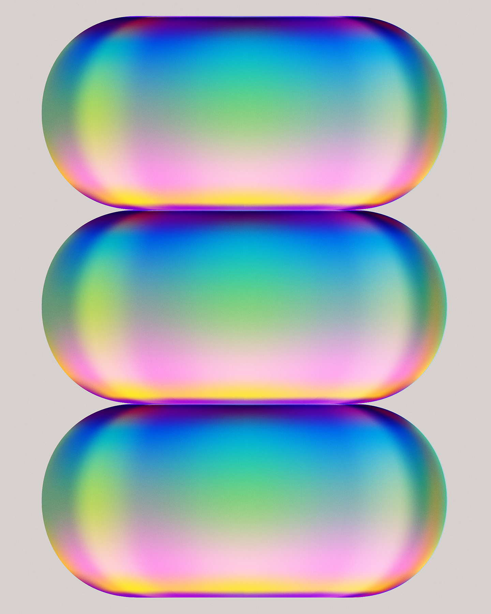

80%
of trials fail to meet enrollment targets.

$8M
lost per day when trials are delayed.

88%
of U.S. hospitals lack infrastructure to run clinical trials.
Someone you love may need a clinical trial.
Today, 88% of hospitals can't run trials.
80%
of trials fail to meet enrollment targets.
$8M
lost per day when trials are delayed.
88%
of U.S. hospitals lack infrastructure to run clinical trials.

The system isn't inefficient.
It's structurally broken.
For most patients,
clinical trials are out of reach.
Maria drove 4 hours each way.
Twice a week. For six months.
Then she stopped.
Not because she chose to.
Because the system made it impossible.
The trial lost a patient.
Science lost a data point.
Maria's disease didn't wait.

Maria didn't fail. The trial didn't fail.
The system failed.
It's time to fix the broken system.
Clinical trial access for all is now a reality.
Trials belong where patients are.
The trial comes to the patient.
Not the other way around.
That's the magic of ElixirTrials.
You treat
the patients.
You bring
the science.

Cauldron — Clinical Trial OS
The humans make the decisions.
The AI does the busy work.
Scheduling, documentation, compliance, reporting —
all clinical trial workflows. Handled.
Phase 1 — Build
Philanthropy
Phase 2 — Scale

Rebuilding clinical trials around patients.
Trials come to the patient. Not the other way around.

Heather Grey
CEO
15+ years building and scaling clinical trial businesses.
Former Tempus TIME Trial builder.
Led large scale pharma partnerships.
Global leader of clinical trial and Real World Data teams.

Noah Dolev
PhD, CTO
PhD, Computational Neuroscience.
15+ years building AI products.
6 startups.
2 unicorns — Wix, Gong.
